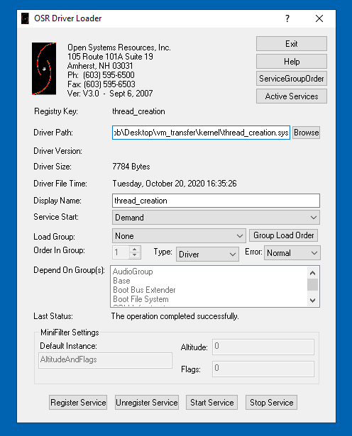
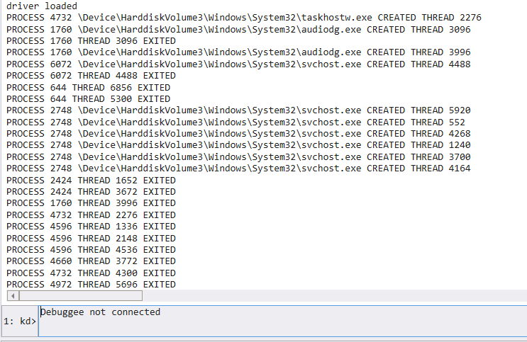

# Thread Creation
-
https://docs.microsoft.com/en-us/windows-hardware/drivers/ddi/ntddk/nf-ntddk-pssetcreatethreadnotifyroutine-
https://docs.microsoft.com/en-us/windows-hardware/drivers/ddi/ntddk/nc-ntddk-pcreate_thread_notify_routinePsSetCreateThreadNotifyRoutine notifies the driver when a new thread is created and subsequently deleted.
A debuggee machine is running our driver.
A debugger machine is running WinDbg and is connected to the debuggee machine.
I load the driver on the debuggee machine using OSR Driver Loader.
Back on the debugger machine, we see the output from out kernel driver in WinDbg.
Immediately we're able to see processes creating threads and threads exiting.
#include <ntifs.h>
#include <ntddk.h>
#include <wdf.h>
/*
Routine that runs on thread creation.
*/
void notify_CreateThread(HANDLE process_id, HANDLE thread_id, BOOLEAN thread_created)
{
if (thread_created == TRUE)
{
PEPROCESS process_info = NULL;
PUNICODE_STRING process_name = NULL;
// grab name of process creating thread
PsLookupProcessByProcessId(process_id, &process_info);
SeLocateProcessImageName(process_info, &process_name);
DbgPrint("PROCESS %d %wZ CREATED THREAD %d \n", process_id, process_name, thread_id);
}
else if (thread_created == FALSE)
{
DbgPrint("PROCESS %d THREAD %d EXITED \n", process_id, thread_id);
}
return;
}
void DriverUnload(PDRIVER_OBJECT DriverObject)
{
UNREFERENCED_PARAMETER(DriverObject);
// remove set notifications
PsRemoveCreateThreadNotifyRoutine(notify_CreateThread);
DbgPrint("driver unloaded \n");
return;
}
NTSTATUS DriverEntry(PDRIVER_OBJECT DriverObject, PUNICODE_STRING RegistryPath)
{
UNREFERENCED_PARAMETER(DriverObject);
UNREFERENCED_PARAMETER(RegistryPath);
NTSTATUS nt_status = STATUS_SUCCESS;
DriverObject->DriverUnload = DriverUnload;
// start
DbgPrint("driver loaded \n");
// notifications
nt_status = PsSetCreateThreadNotifyRoutine(notify_CreateThread);
return nt_status;
}